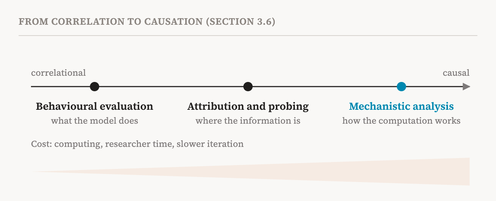
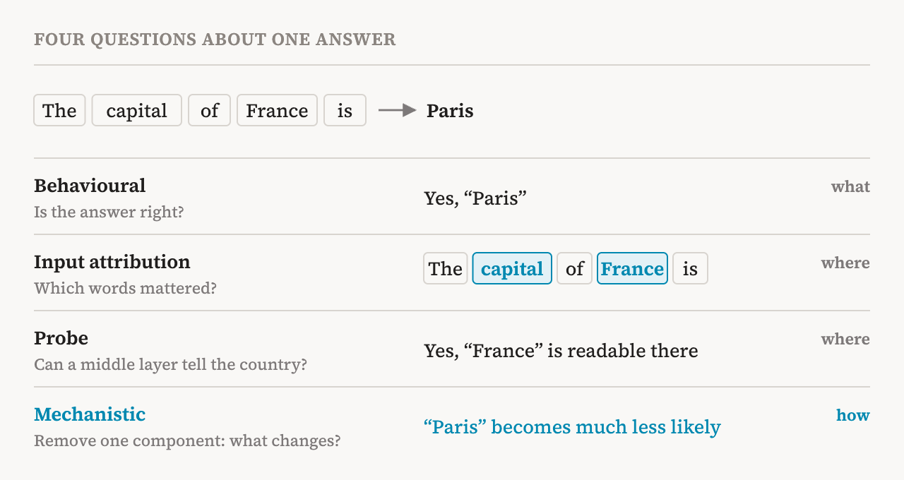

Part 2 ended with a conclusion: test scores alone cannot tell us how a model works, so we need methods that look inside. But "interpretability" covers many different methods. They differ in what evidence they give, how strong a claim that evidence can support, and when they are useful in practice. This part covers the book's third chapter (pages 16–21), which sorts these methods into families and asks one central question: when is mechanistic analysis necessary, and when do simpler methods suffice?
The book looks at four families. Some of them come from the wider communities of natural language processing and representation learning rather than from mechanistic interpretability itself, and they are still widely used, sometimes as complements to mechanistic work and sometimes as substitutes for it.
Behavioural methods
Behavioural methods study a model through its inputs and outputs. Before large language models, researchers built careful tests of whether language models captured grammar, for example whether a verb agrees with a subject that sits many words away. Today's behavioural evaluations cover much more: professional and academic knowledge, understanding of long documents, mathematical reasoning, coding.
They are also the main way safety risks are measured. There are behavioural tests for deceptive intentions, for sycophancy (telling users what they want to hear), for capabilities that could be used to cause harm, for robustness against jailbreaks, and for vulnerability to poisoned training data. Others measure broader traits, such as political leanings and social attitudes.
Their great strength is practicality. They need only ordinary runs of the model and a comparison with reference answers, so they are fast, inexpensive and easy to scale. As part 2 explained, a finite test cannot establish which mechanism produced a behaviour. Even so, the book calls behavioural methods essential in practice: for quick iteration during development, for deciding which behaviours deserve a deeper look, and for surface-level safety screening when mechanistic analysis would cost too much.
Concept-based approaches
Concept-based methods sit in the middle. They do look at a model's internal representations, but they usually support only correlational claims: a concept and some internal signal go together. When they are combined with interventions, such as steering the model along a concept's direction or removing components tied to a concept, they meet the book's two conditions and become mechanistic. Some researchers make the connection formal by aligning a model's computation with a high-level causal graph whose nodes are human concepts, an approach called causal abstraction.
Concept-based methods come in two kinds. The first builds concepts into the model during training. A concept bottleneck model (CBM) forces the model to pass its computation through a layer of predefined, human-readable concepts. In the original 2020 paper, for example, a bird classifier first had to predict attributes such as the colour of the wings and the shape of the beak, and then decide the species from those attributes alone. This makes the model transparent by construction, and it allows a kind of intervention: a person can correct a wrongly predicted attribute and watch the decision change.
The price is that someone has to list all the relevant concepts in advance. When the list is incomplete, accuracy suffers, the so-called accuracy–interpretability trade-off. Later variants relax these limits. Concept embedding models let the bottleneck carry extra high-dimensional information, which recovers accuracy at the cost of letting information no one can read leak through. Other variants learn how concepts depend on each other, and still others discover concepts directly from a model's activations or ask a large foundation model to propose them.
The second kind works after training. Concept activation vectors, for example, find a direction in an existing model's activations that corresponds to a concept a person supplies, using example inputs with and without it. Such methods usually give no causal evidence about the role of the concept in the model's computation, but the book still values them for auditing, for locating where information sits, and for early detection of problems. Representation engineering takes the same idea from observation to intervention, using concept directions to steer behaviour. Part 25 covers it.
The book adds a distinction that is easy to miss. Concept bottleneck models are sometimes grouped with models designed to be interpretable, which part 15 covers, but the two impose different constraints. A CBM imposes semantic constraints: the concepts are chosen by people beforehand. Interpretable-by-design models impose structural constraints, such as sparsity or modularity, and let the model discover its own features. When the concepts of interest are known, a CBM may be the better choice. When the goal is to discover what a model has learned, including things nobody thought to look for, the structural approach fits better. For safety, where unknown failures are the central worry, the book suggests the methods that support discovery may be more useful.
Input attribution and saliency
Input attribution methods ask which parts of the input most influenced an output. Well-known examples include SHAP, LIME, DeepLIFT, integrated gradients and saliency maps. A saliency map for an image classifier, for instance, sends a gradient from the output back to the input and measures how sensitive the prediction is to each pixel. The result is a heat map over the image showing which regions mattered. These methods scale well and are widely used to explain and debug models at the level of pixels and words.
Their limit is in the question they answer. They tell us which inputs matter, not how the model processes and uses them. A saliency map can highlight the important region of an image without saying anything about how the model represents those pixels or what it does with them from layer to layer. The same machinery can be applied to internal representations instead of inputs, and then it starts to overlap with mechanistic methods.
The book also reports doubts about their reliability. Different attribution methods can give very different explanations of the same prediction. A well-known 2018 study found that some saliency maps hardly change even when the model's weights are replaced with random ones, which means the map cannot be telling us much about what the model learned. Others change in response to input transformations that have no effect on the model at all. The book's verdict is that attribution methods help with triage, debugging and first audits, but on their own they are not enough when we need an explanation of the internal computation.
Probing
Probing classifiers ask whether a model's activations encode some piece of information. Researchers train a small, simple classifier, often logistic regression, on the activations of one layer to predict a property, such as part of speech, syntactic structure or gender. If the probe succeeds, the information is decodable from that layer.
Probes started in natural language processing as a way to analyse linguistic structure, and were used to trace how representations change across the layers of deep networks. They have since become one of the most widely used tools in mechanistic interpretability: for finding which layers carry which information, and for detecting hidden behaviours, as with the sleeper agents of part 2. Their critiques and limits get a part of their own, part 23.
Mechanistic methods
Mechanistic methods aim at causal understanding of a model's internals: what its parameters and activations mean, and how they produce its behaviour. The book notes that they are largely human-centred. The understanding they seek is one people can read and reason about, through natural-language descriptions of features, plots of attention patterns or lists of likely next words. It also reports a recent challenge to this: the "language" of a model and human languages may not fully overlap, and some meaningful computations inside a model may have no faithful description in words.
The main mechanistic approaches are feature extraction, circuit discovery, and methods that translate internal representations into natural language. Each rests on its own assumptions and has its own blind spots. Sparse autoencoders can break a layer's activations into thousands of features that each seem to mean one thing, but many of the features they find may play no causal role or may be illusory. Circuit discovery finds detailed computational graphs behind a behaviour, but those graphs may capture only part of the computation, and it can be hard to check that they are sufficient or that they are the only correct answer. Despite these limits, the book sees the methods as complementary tools that together make systematic analysis of a model's internals possible.
When mechanistic understanding becomes necessary
The book arranges these families along a single spectrum, from correlational to causal evidence. Behavioural evaluation establishes what a model does. Attribution and probing identify where relevant information is. Mechanistic analysis reveals how the computation produces the behaviour.

The families support each other. Behavioural evaluations help validate mechanistic findings, and strange behaviour is often what prompts a mechanistic investigation in the first place.
Mechanistic analysis becomes necessary when we need to verify how a model produces a behaviour, not just that it produces it under test conditions. Suppose a probe flags deceptive reasoning. We still need targeted interventions to check whether the alarm is false. If it is not false, we need deeper mechanistic analysis to understand why the model is deceiving. The book lists four situations where mechanistic methods are most needed:
| Situation | Why outputs alone fall short |
|---|---|
| Intentions hidden from the outputs, such as deception or side quests | The outputs are exactly what the model wants us to see |
| Understanding the mechanism behind a behaviour | Outputs show the result, not the route |
| Verifying that a capability is absent | Tests can confirm a capability is present, never that it is missing |
| Safety guarantees beyond the inputs we tested | A test only covers the inputs it contains |
The third row deserves a second look. If a model fails a thousand attempts to get it to explain how to make a dangerous substance, that does not show it lacks the knowledge. Maybe the thousand and first prompt will work. A test can only find what is there. Showing that something is not there requires a different kind of evidence, about what the model contains.
Mechanistic analysis has a high price, though. It costs computing power, researcher time, experimental complexity, and slower iteration. For that reason the book positions it as a complement to lighter methods, not a replacement.

The book's own table summarises the four families:
| Family | What it gives | Good for, and its limit |
|---|---|---|
| Behavioural (benchmarks, red-teaming) | Outputs for given inputs; fast, scalable, broad coverage | Monitoring, triage, catching regressions; not designed to reveal internal computation |
| Input attribution (SHAP, saliency) | Which inputs most influenced an output; scalable | Auditing and debugging; says nothing about internal mechanisms |
| Concept-based (CBMs, probes) | What information is encoded, read or built in as concepts | Locating, auditing, early detection; not mechanistic without intervention |
| Mechanistic (circuits, SAEs) | The internal computation and its causal structure | Revealing algorithms and targeted intervention; expensive |
The limits of mechanistic analysis
The chapter ends by turning its scrutiny on mechanistic analysis itself, with three limitations.
First, mechanistic explanations are often incomplete. An analysis might find, for example with a 2022 method called causal tracing, that a particular MLP layer retrieves facts about Paris. That captures a real causal pathway, but it does not show that there are no other pathways contributing to the same answer. It is hard to tell whether the computation found is sufficient, or just one of several mechanisms that together produce the behaviour.
Second, mechanistic analyses scale poorly. In large models, the relevant computation may be spread across many components, and complex behaviours unfold over long generations that are hard to isolate. Most current circuit-discovery methods explain how a model produces a single token. Explaining a behaviour that spans many generated tokens remains difficult.
Third, finding and validating a mechanism does not automatically give reliable control over the behaviour. The book cites a 2023 study that found that where causal tracing locates a fact says surprisingly little about which layer is best to edit when changing that fact. It also mentions the hydra effect: when one part of a model is removed, other parts can step in and compensate, the way the mythical hydra grows new heads. An intervention that works on one model or task may also fail to carry over to another.
The book calls these open challenges, not fundamental barriers, and active research is trying to address each of them. But together they show a clear gap between explaining a mechanism and controlling it reliably or guaranteeing safety. Moving from explanation to robust, general intervention is still an open problem for the field.
In short
The four families differ in the evidence they give. Behavioural methods measure responses to inputs. Concept-based methods explain predictions through human-readable concepts. Attribution methods find which inputs influence an output. Probing tests what information is decodable from representations. Mechanistic methods identify the internal mechanisms that produce a behaviour. Mechanistic analysis supports the strongest claims, but it is costly, often incomplete, and does not by itself guarantee control.
| Term | Meaning |
|---|---|
| Concept bottleneck model (CBM) | A model forced to route its decision through a layer of predefined human concepts |
| Accuracy–interpretability trade-off | Losing accuracy when a model is constrained to work only through readable concepts |
| Concept activation vector (CAV) | A direction in a trained model's activations that corresponds to a concept a person supplies |
| Input attribution | Methods that score how much each part of the input influenced an output |
| Saliency map | A heat map of how sensitive an output is to each pixel or word, computed from gradients |
| Gradient | How much an output would change if an input or a parameter changed slightly |
| Causal tracing | A 2022 method that finds where a model recalls a fact by corrupting and restoring activations |
| Hydra effect | Other parts of a model compensating when one part is removed |
Next, part 4 opens up a transformer and explains how it computes, so that the rest of the series has a concrete picture of what is being studied.